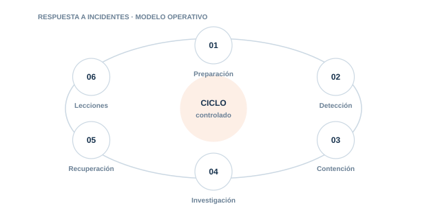

06 · PILAR
Respuesta a incidentes
Responder a incidentes de IA conservando contexto, evidencias y control del impacto.

Directorio del pilar5 guías · acceso directo
06.0106.0206.0306.0406.05
Prompt Injection
Contén instrucciones maliciosas directas o indirectas y revisa su alcance.
Fugas de datos
Responde a exposición de PII. secretos. documentos RAG o datos de entrenamiento.
Incidentes de agentes
Detén acciones autónomas o no autorizadas sin perder la trazabilidad.
Incidentes de modelos
Gestiona extracción. poisoning. degradación y comportamiento inesperado.
Incidentes MCP
Responde a servidores o herramientas MCP comprometidos o maliciosos.
01
PreparaciónControl y evidencia aplicable
02
DetecciónControl y evidencia aplicable
03
ContenciónControl y evidencia aplicable
04
InvestigaciónControl y evidencia aplicable
05
RecuperaciónControl y evidencia aplicable
06
LeccionesControl y evidencia aplicable
Cada guía incluye explicación, implantación, controles, evidencias, errores habituales, métricas y referencias.